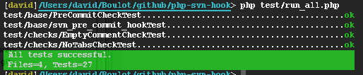
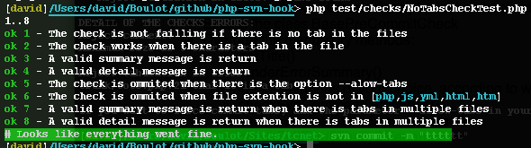

You can download this project in either zip or tar formats.
You can also clone the project with Git by running:
$ git clone git://github.com/jeanmonod/php-svn-hook
Initially the project is provide with two simple checks:
If you ewant to do more, you will have to develop your own checks
[david]/Users/david/myProject/> svn commit -m "Add a file with tabs" Sending tab_file.php Transmitting file data .svn: Commit failed (details follow): svn: Commit blocked by pre-commit hook (exit code 1) with output: PRE COMMIT HOOK FAIL: The following pre commit check fail: * Reject tabulation in files: 1 tabs found DETAIL OF THE CHECKS ERRORS: Reject tabulation in files: trunk/tab_file.php:21 Char 16 is a tab If you want to force commit tabs, add the parameter --allow-tabs in your comment
As it's can be panful to process a commit each time you want to test your scripts, there is test suite avaliable based on lime (extracted from symfony 1.4).
Just go to the root folder and run:
php test/run_all.php
To run a specific check test, call directly the test file, for exemple:
php test/checks/NoTabCheckTest.php
To write your own test, just copy and paste and existing test file, and adapt it!
If you want to contribute please fell to fork or to send your comment. I will be happy to complete this repo according to your needs...